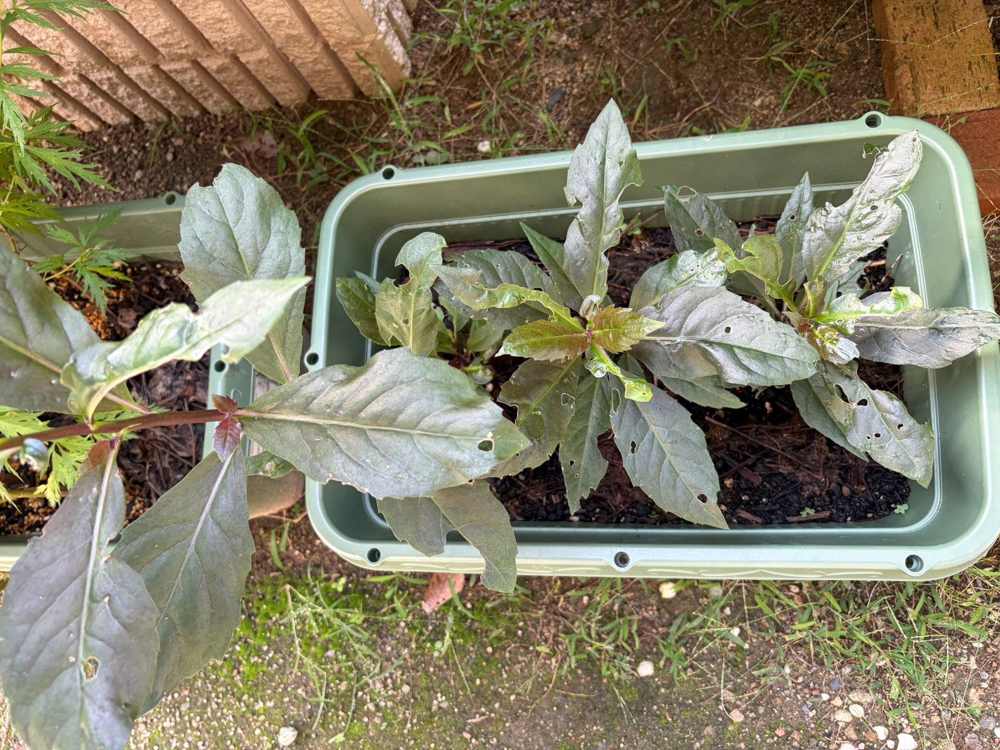

2026/10/12 大きな葉と枝先の小さな葉を見せる、プランターの金時草
10月12日の金時草は、プランターに植えた3本がそれぞれ葉を広げています。左の苗はプランターの縁を越えて外側へ大きく張り出し、中央と右の苗も、茎の先を中心に長い葉を伸ばしています。
前回の9月19日から23日がたちました。今回も左の苗の広がりが目立ちますが、中央と右の苗にも大きな葉が残り、枝先には小さな葉が見られます。3本が同じ大きさにそろった状態ではなく、それぞれの違いを残しながら育っています。
一方で、葉には丸い穴や不規則な穴、縁が欠けた部分があります。傷みのない葉ばかりではありませんが、大きく開いた葉と、その間にある小さな葉を一緒に見られる姿です。
花や蕾は、今回も見当たりません。今は開花よりも、枝葉の広がりや枝先の変化が観察の中心になっています。

植え替えから43日。3本それぞれが葉を広げています
8月30日に、3号ポットで発根した金時草3本をプランターへ植え替えてから、43日がたちました。9月19日は植え替えから20日後の姿でしたが、今回はそこからさらに23日後の記録です。
プランターの中には、大きな葉が上向きや横向きに広がっています。葉同士が重なる部分もありますが、株の間や手前には土が見え、プランター全体が隙間なく葉で覆われている状態ではありません。
最初から3号ポットで育てていた左の苗と、途中でポットへ移して生き残った中央・右の苗では、今も姿に違いがあります。特に左の苗は長い茎が外側へ伸び、その先にも葉をつけているため、プランターの中だけでは収まらない広がりを見せています。
ただ、今の大きさの違いが、最初の育て方だけで決まったのかどうかまでは分かりません。これまでの経過と現在の姿を重ねながら、それぞれの苗の変化を見ていきたいと思います。
左の苗は、横へ伸びた茎と大きな葉が目立ちます
左側では、赤紫色を帯びた茎がプランターの外へ横向きに伸びています。その茎に大きな葉がつき、手前や左側へ張り出しています。
手前中央に広がる葉は幅があり、中央を通る太い葉脈と、その左右へ分かれる葉脈がよく見えます。葉の先はとがり、縁には細かなぎざぎざがあります。さらに左下へ伸びる長い葉もあり、左の苗が占める範囲の広さを感じます。
上向きに立った葉と、横へ開いた葉、手前へ垂れるように伸びた葉があり、葉の向きは一様ではありません。同じ苗の葉でも、向きや光の当たり方によって、緑色が強く見えるものと紫色を帯びて見えるものがあります。
9月19日にも、左の苗はすでにプランターの縁を越えて葉を広げていました。今回もその特徴が続いており、3本の中では外側への張り出しが最も目立っています。
中央の苗には、大きな葉の間に小さな葉が見られます
中央の苗は、上へ立ち上がる長い葉と、左右や手前へ広がる葉が目立ちます。葉の付け根が集まる部分を中心に、異なる方向へ葉が開いています。
中央から奥へ伸びる葉は細長く、先端がとがっています。その周囲には横へ開いた葉があり、手前側にも長い葉が伸びています。大きな葉の間には隙間もありますが、茎の先を囲むように葉がついています。
中心付近には、まだ小さな葉がまとまっています。大きく開いた葉に比べると明るい黄緑色や赤みを帯びた色に見え、葉の大きさだけでなく色合いにも違いがあります。
小さな葉は、まだ大きな葉ほど長く伸びていません。左右へ開き始めたものや、十分に開いていないものがあり、枝先にこれからの変化を楽しみにできる部分が残っています。
9月19日にも、中央の苗の中心には赤紫色の小さな葉が見られました。今回も枝先に小さな葉がある一方、それが前回と同じ葉なのか、その後に出た別の葉なのかまでは見分けられません。今の姿として、大きな葉と小さな葉が同時に見られることを記録しておきます。
右の苗も、上と横へ葉を広げています
右の苗では、奥へ向かって立ち上がる葉と、右側へ横長に広がる葉が目立ちます。手前へ伸びる葉もあり、茎の先を中心にいくつかの方向へ葉が開いています。
右端へ広がる葉は、プランターの縁に近いところまで伸びています。奥側の葉も長く、中央の苗とは少し違う向きに葉を広げています。左の苗ほど外へ大きく張り出してはいませんが、一枚一枚の葉には存在感があります。
枝先には小さくつやのある葉も見られます。大きな葉に囲まれた中心部に、小さな葉が重なっているように見え、ここでも葉の大きさに違いがあります。
9月19日には、右の苗も上向きの葉と横へ開く葉をつけていました。今回も同じように、立ち上がる葉と横へ広がる葉が組み合わさった姿です。急に株全体が密に茂ったというより、今ある葉を広げながら、枝先の小さな葉も見られる状態だと感じます。
葉の穴や縁の欠けは、今回も目に入ります
大きく広がった葉には、丸みのある小さな穴や、形の不規則な穴があります。葉の内側に穴が開いたものだけでなく、縁から欠けている葉も見られます。
左の苗では、手前へ広がる大きな葉の先端寄りに穴があり、葉の縁にも細かな欠けが残っています。奥へ立ち上がる葉にも、縁が大きく欠けた部分があります。
中央の苗では、上向きに伸びた葉や手前へ広がった葉に穴が見られます。葉の途中が抜けたようになった部分や、縁が波打つように見える部分もあり、葉の形はそろっていません。
右の苗にも、いくつもの小さな穴が開いた葉や、縁が欠けた葉があります。上向きの長い葉は先端付近や縁に欠けがあり、手前側の葉にも穴が見えます。
前回の9月19日にも、3本それぞれに葉の穴や欠けがありました。今回も傷みは残っていますが、同じ葉の傷がそのまま見えている部分と、その後に変化した部分を正確に分けることはできません。穴が見えることだけで、前回より傷みが増えたとは決めずに見ておきたいと思います。
穴や欠けの原因も、この姿だけでは特定できません。まずは葉の状態を記録しながら、枝先の小さな葉がどのように広がるかを見守ります。
緑色と紫色が重なり、葉脈もはっきりしています
大きな葉には、緑色の中に紫色や灰紫色を帯びて見える部分があります。葉の向きや光の当たり方が違うため、明るく見える葉と落ち着いた色に見える葉が混在しています。
特に手前へ広がる葉では、中央の葉脈が明るい線のように見え、そこから左右へ伸びる葉脈も分かります。葉の面には緩やかな凹凸があり、平らな一枚の板というより、葉脈に沿った起伏のある姿です。
横へ伸びた茎や葉の付け根には赤紫色が見られます。枝先の小さな葉にも赤みがあり、大きな葉の落ち着いた色との違いが目を引きます。
ただ、今回見えている色だけで、葉の表裏や色の変化をすべて判断することはできません。今の金時草は、緑色と紫色を帯びた葉、赤紫色の茎や小さな葉が重なった姿として眺めています。
9月19日から23日。葉の広がりと枝先の様子を見ていきます
9月19日は、左の苗がプランターの外へ大きく葉を広げ、中央と右の苗も葉の存在感を増していた時期でした。3本とも葉に穴や欠けがある一方、枝先には小さな葉が見られました。
10月12日も、左の苗の張り出しが目立ち、中央と右の苗がそれぞれ葉を広げています。大きさの違いは残っていますが、3本とも葉をつけた姿を保っています。
今回の姿から、23日間でどれだけ葉が大きくなったか、何枚増えたかを正確に比べることはできません。それでも、植え替え後の3本が今も葉を広げ、枝先には小さな葉があることは、引き続き見ていきたい点です。
大きな葉だけを見ると傷みも目立ちますが、枝先へ目を移すと、小さな葉の姿も見られます。葉の傷みと枝先の動きを、どちらか一方だけで判断せず、合わせて記録していきたいと思います。
花や蕾はまだ見当たりません
今回も、開いた花や、まとまった花の蕾は見当たりません。枝先で小さくまとまっている部分は葉の形をしており、今のところは葉の展開を見ている段階です。
9月19日にも花や蕾は見当たらず、まずは3本の枝葉が充実することを願っていました。10月12日もその続きとして、葉の広がりと小さな葉の様子を見ています。
金時草は春のアサギマダラの飛来を楽しみに植え付けたものですが、今は花を急いで期待するよりも、3本が育ち続けてくれることを大切にしたいと思います。
これからは、枝先の小さな葉がどのように開くのか、中央と右の苗がどこまで広がるのか、そして葉の傷みがどう変わるのかを見ていきます。季節が進む中での葉色や株の姿も含めて、引き続き金時草の生育を記録していきたいと思います。